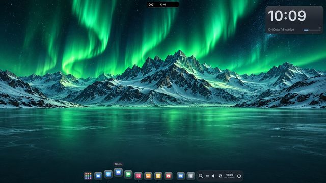
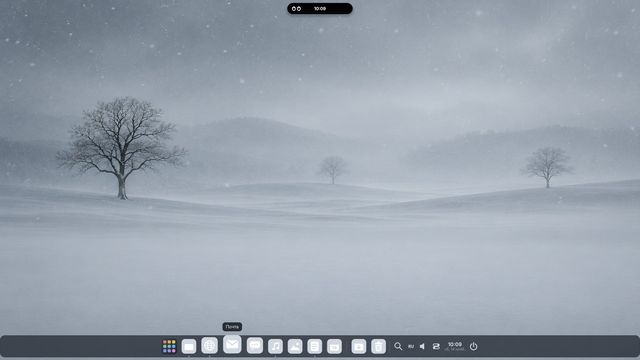
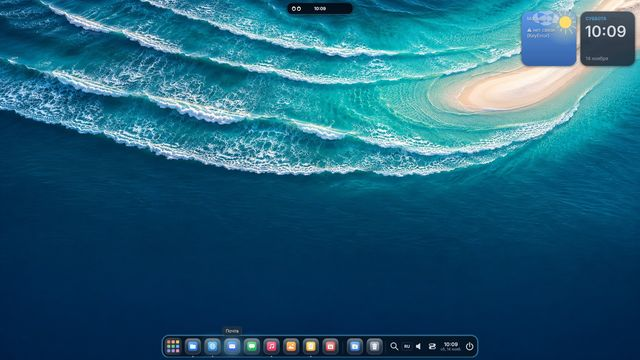

Windows'u kendinize göre yapın
Dock sıradan masaüstünü güzel ve kullanışlı hale getirir: ekranın her kenarında program dock'u, üstte canlı Ada, canlı duvar kağıtları, widget'lar ve hazır görünümler — hepsi tek tıkla.
⬇ Ücretsiz indir


Tasarımcı görünümleri
Duvar kağıdı, renk, dock biçimi, simgeler, Ada ve widget'lar birlikte değişir. Beğenmediniz mi? “Beni şaşırt” rastgele bir görünüm kurar.










İstediğiniz yerde, istediğiniz gibi

Her kenarda dock
Altta, üstte, solda veya sağda — Alt'a basılı tutup sürükleyin. Daha fazlası mı lazım? Oyun veya iş için ikinci dock'u açın.

Masaüstünü düzenle
Widget'ları, dock'u ve Ada'yı fareyle taşıyın; çıkartma, GIF ve istediğiniz yazı tipinde yazı ekleyin.

Üstte Ada
Canlı bir hap: kapaklı ve sözlü müzik, bildirimler, hatırlatıcılar, zamanlayıcı ve Wi-Fi ile telefondan dosyalar.

34 widget
Saat, hava, plak, takvim, hesap makinesi, ay, dünya saati. Her boyut, buzlu cam, hazır setler.

Canlı duvar kağıtları
Video, GIF ve canlı sahneler. Duvar kağıdı fareyi izler, müzikle parlar — dışarıda kar yağarsa masaüstünüzde de yağar.

Kaybolmazsınız
“Dock neler yapabilir” her özelliği “Göster” düğmesiyle listeler, günlük ipucu yeni bir şey önerir.
Topluluk görünümleri
Dock kullanıcılarının kurduğu masaüstleri. Bir kodu kopyalayıp Dock'a yapıştırın: Görünümler → “Kodu yapıştır…”.
Sık sorulan sorular
Ücretsiz mi?
Evet. Bu sayfadaki her şey ücretsiz.
Güvenli mi?
Dock sizi izlemez, reklam yoktur. Her güncelleme imzalıdır: imza uyuşmazsa Dock dosyayı kurmaz.
Bilgisayarı yavaşlatır mı?
Hayır: Dock yaklaşık 150 MB bellek ve %1'den az işlemci kullanır; canlı duvar kağıtları görünmediğinde ve oyunda duraklar.
Windows görev çubuğu ne olacak?
İlk açılışta siz seçersiniz: bırakmak, otomatik gizlemek veya tamamen kaldırmak.
Nasıl eski haline dönerim?
Ayarlar → Uygulamalar'dan Dock'u kaldırın. Görev çubuğu, duvar kağıdı ve simgeler geri gelir.
Nereye soru sorarım?
Telegram botumuza yazın — yazar yanıtlar. Ya da Dock'ta: “Sorun bildir”.